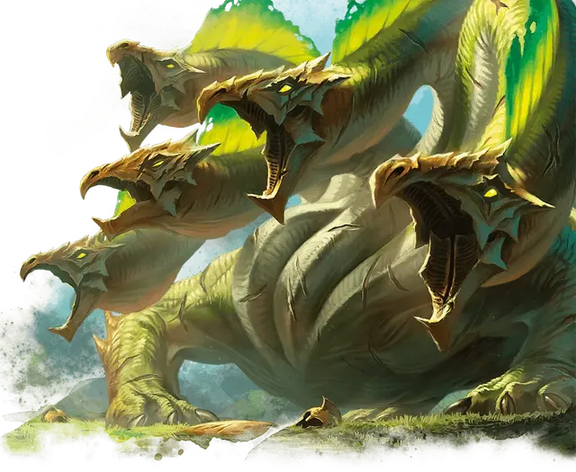

Железнокожая гидра
Ironscale Hydra
Громадный Монстр, без мировоззрения

Класс Доспеха 17 (природный доспех)
Хиты 181 (11к20 + 66)
Скорость 40 футов, плавая 40 футов
| мод | спас | ||
|---|---|---|---|
| СИЛ | 22 | +6 | +6 |
| ЛОВ | 10 | +0 | +0 |
| ТЕЛ | 22 | +6 | +6 |
| мод | спас | ||
|---|---|---|---|
| ИНТ | 2 | −4 | −4 |
| МДР | 10 | +0 | +0 |
| ХАР | 7 | −2 | −2 |
Навыки Восприятие +8
Иммунитет к урону кислота
Чувства тёмное зрение 60 футов, пассивное Восприятие 18
Опасность 12 (8400 опыта)
Бонус мастерства +4
Особенности
Кислотная кровь. Когда гидра получает колющий или рубящий урон, каждое существо в пределах 5 футов от гидры получает 9 (2к8) урона кислотой.
Задержка дыхания. Гидра может задержать дыхание на 1 час.
Многочисленные головы. У гидры пять голов. Пока у гидры больше одной головы, она совершает с преимуществом спасброски от испуга, глухоты, лишения сознания, ослепления, очарования и ошеломления. Если гидра за один ход получает урон 35 или больше, одна из её голов умирает. Если умрут все головы, умирает и гидра. В конце своего хода она отращивает по две головы за каждую умершую голову с конца её предыдущего хода, если только она не получала за этот период урон огнём. За каждую отращенную голову гидра восстанавливает по 10 хитов.
Реагирующие головы. За каждую голову после первой гидра получает дополнительную реакцию, которую можно использовать только для совершения провоцированных атак.
Неусыпный. Пока гидра спит, как минимум одна её голова бодрствует.
Действия
Мультиатака. Гидра совершает столько атак укусом, сколько голов у неё есть.
Укус. . Рукопашная атака оружием: +10 к попаданию, досягаемость 15 футов, одна цель. Попадание: 17 (2к10 + 6) колющего урона.
Описание
Пятиглавые железнокожие гидры скрываются в диких местах, являясь обычными врагами для героев, стремящихся испытать свою храбрость против ужасов, достойных внимания богов. Большинство железнокожих гидр обитают в озерах и заболоченных пещерах, откуда они охотятся на неосторожных существ, которые приходят попить или поплавать.
Гидры
Что кракены для моря и драконы для неба, то гидры для земель Тероса. Различные гидры обитают на окраинах цивилизации, от обитающих в болотах гидр, известных по всей мультивселенной, до массивных железнокожих гидр, которые скрываются в диких местах. Но даже за их пределами существуют змеевидные ужасы, порождённые прихотями злых богов, такие как легендарная гидра Поликран.
Территориальные страхи. В первые годы своего существования гидры подпитывают свой быстрый рост, терроризируя землю. Когда они вырастают достаточно большими, они ищут территорию, на которую могли бы претендовать как на свою собственную. Часто они похищают логова у других монстров в длительных, разрушительных битвах.
Порочный рост. Вскоре после того, как гидра захватывает территорию, она обычно зарывается в землю, впадая в спячку, в течение которого продолжает расти. Когда она просыпается, то начинает буйствовать, питаясь, так что цикл начинается снова. Эти ритмы разрушения иногда настолько укореняются в умах и знаниях людей, что даже после поражения гидры зверь может вновь появиться как существо, порождённое Никсом, и начать свою историю заново.